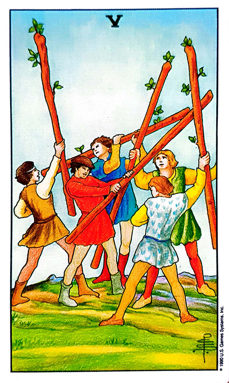

![고동색 Old Copper 카드]()
REDSUN COLOR TAROT · STUDY NOTES
쉽고 재미있는 레드썬의 컬러타로 — 챕터 17 (230~237쪽)
“ 길고긴 오랜 기다림 ”Old Copper는 짙은 갈색·고동색으로, 오래된 나무껍질과 마을의 수호목, 태평양을 건너는 커다란 배에 비유되는 컬러입니다. 오랜 시간이 걸리지만 그 시간을 버텨내면 커다란 결과물을 얻는 — 이번 시리즈에서 가장 “인내”가 중심이 되는 색입니다.
Old Copper 컬러는 짙은 갈색이나 고동색을 의미합니다. 갈색은 광물색의 한 종류로서 우리 주변에서 흔히 볼 수 있는 흙이나 낙엽, 나무 같은 자연물에서 흔히 볼 수 있기 때문에 인간에게 안정감과 편안함을 줍니다.
Old Copper는 짙은 갈색을 의미하는데 침착하고 주위로부터 흔들리지 않는 굳은 이미지를 풍기지만, 고집스러워 보일 수 있으며 고독해 보이기도 합니다.
항상 우리 곁에 있고 변하지 않는 — 그래서 고집스러운 안정감과 편안함의 색입니다.
Old Copper 컬러는 자신의 개성을 나타내기보다는 주위 환경에 비위를 맞추는 색입니다. 하지만 다른 색을 돋보이게 하기보다는 다른 색의 힘을 빼앗는 색으로써, 다른 색과 함께 배치되면 다른 색을 탁하게 보이게 합니다.
| 함께 놓으면 | Old Copper의 영향 |
|---|---|
| + Red | Red의 열정을 약하게 만든다 |
| + Blue | Blue의 정신을 흐리게 만든다 |
| + Yellow | Yellow의 총명함을 탁하게 한다 |
Old Copper 컬러는 중세 시대부터 가난한 농부와 머슴, 하인, 거지들의 색으로 가난한 자들의 색이었습니다. 때가 잘 타지 않는 색으로서 어느 것에도 어울리는 중립적인 색이지만, 오래된 과거의 색이기에 유행에 뒤떨어진 느낌을 주기도 합니다.
생동력과 에너지가 부족해 보여 나이가 들수록 이 색을 싫어합니다.
또한 갈색은 어리석음의 색이라 하는데 — 회색은 무지, 분홍은 천진함, 검정은 무관심을 나타내기도 합니다.
우리나라는 예로부터 마을 사람들의 건강과 함께 무병장수와 풍년을 빌고 재해가 없는 생활 등을 기원하기 위해 제사를 올리는 수호목 역할을 하는 나무가 있습니다.
Old Copper 컬러는 태평양을 건너는 커다란 배에 비유할 수 있습니다.
이 색은 물질적인 욕구가 강한 특성이 있는데, 오래되면 될수록 그 욕구는 강해지며 수단과 방법을 가리지 않고 쟁취하려 하기도 합니다.
살아있는 나무들은 대체로 밝은 갈색이지만, 죽은 나무들은 한결같이 검은색에 가까운 짙은 갈색으로 변합니다.
이 색은 아주 오랜 시간이 걸리고 그 시간 동안 매우 힘든 상황이 지속됩니다. 그 상황 속에서 결과물에 다다르지 못하고 포기하는 경우가 많으며, 고통을 겪고 이겨내었을 때 커다란 결과물을 얻을 수 있습니다.
타로에서 이 색이 나왔다면 가장 중요한 것은 과연 내담자가 결과물이 나올 때까지 참고 버틸 수 있는지 파악하는 것입니다. 어차피 결과를 얻지 못할 상황이라면 빨리 포기하는 것이 나을 수 있습니다.
특히 금전과 관련된 질문에서는 상담사의 말 한마디로 엄청난 손실이 날 수 있기에, 이 색이 나왔다면 신중하게 해석할 필요가 있습니다.
| 비교 | Ocher (황토색) | Old Copper (고동색) |
|---|---|---|
| 걸리는 시간 | 빠른 전환 · 즉시 대처 | 아주 오랜 시간 |
| 결과의 크기 | 결과가 한정적 | 커다란 결과물 (버텨냈을 때) |
| 핵심 조언 | “그때그때 유리한 쪽으로” | “버틸 수 있는지 먼저 판단하라” |
— 같은 갈색 계열이지만 Ocher는 “빠름·한정적”, Old Copper는 “느림·대형”으로 정반대에 가까운 리딩을 합니다.
| 성격 특징 | |
|---|---|
| 1 | 차분하고 침착한 사람입니다. |
| 2 | 황소와 같이 묵묵히 자신의 일을 해나가는 사람입니다. |
| 3 | 아무리 어려움이 닥쳐도 이겨 내려는 강한 의지가 있습니다. |
| 4 | 자신의 감정을 다른 사람들에게 표현하지 않는 사람입니다. |
| 5 | 욕심이 매우 많으며 보수적인 사람입니다. |
| 6 | 마음이 넓고 이해심이 좋으며 주위 사람들을 잘 보살핍니다. |
| 7 | 인내심이 있고 끈기가 있습니다. |
| 8 | 자신이 맡은 임무는 책임지고 완수합니다. |
| 9 | 자신의 믿음에 대한 고집이 엄청 강합니다. |
| 10 | 언제나 변함없이 한결같은 사람입니다. |
| 11 | 돈에 관한 한 철두철미할 수 있습니다. |
| 12 | 새로운 것에 대한 두려움이 있어 변화를 싫어합니다. |
“길고긴 오랜 기다림” — 차분·묵묵함·강한 의지·인내·책임감·포용·한결같음·돈에 철두철미의 어른스러운 면과, 감정 미표현·보수·믿음에 대한 강한 고집·변화 두려움의 닫힌 면이 공존합니다. 황소형 인간이 핵심 이미지.
연애운에서 이 컬러가 나왔다면 아주 오래된 연인입니다. 오랫동안 힘들게 만나고 있다는 것을 의미합니다. 서로 안 맞는 부분이 많으며 현재는 힘들게 만납니다. 힘들지만 어느 정도의 시간이 지나면 오랫동안 끈끈하게 만날 수 있습니다.
또한 이 색은 오랫동안 사랑을 하지 못한 사람으로 애정 결핍증 증세를 보일 수도 있습니다.
| 카드 조합 | 핵심 한 줄 | 상세 해석 |
|---|---|---|
 V of WANDS (완드 5) + Old Copper |
주도권 싸움 · 자존심 대결 | 지금과 같은 카드 배열이 나왔다면 일종의 주도권 싸움을 오랜 시간 하는 모습인데, 서로 자존심이 강하여 자주 싸우는 모습입니다. 서로에 대한 배려보다는 이기려고 하는 마음이 강하여 서로 피곤하고 힘이 듭니다. 하지만 이런 상황 속에서도 오랜 기간 버티고 만나다 보면 미래는 서로 이해하는 순간이 오며 좋아질 수 있습니다. |
| 애인 질문 + Old Copper | 지금은 만날 상황 아님 | “애인을 만날 수 있을까요?” 질문이라면 지금은 애인을 만날 상황이 아닙니다. 오랜 기간 일에 지쳐 있으며, 마음속에서 애인을 만나는 것에 대해서 긍정적인 생각보다는 걱정을 하며 갈등하고 있는 모습입니다. 애인을 만나기까지 마음의 안정이 필요하며 오랜 시간이 걸릴 듯합니다. |
금전운에서 Old Copper색이 나왔다면 지금은 매우 힘든 상황입니다. 이런 상황은 오랜 기간 지속되어 왔거나 앞으로도 지속될 수 있습니다. 지금의 금전 활동에 대해서 곰곰이 생각해 볼 필요가 있습니다.
| 카드 조합 | 핵심 한 줄 | 상세 해석 |
|---|---|---|
| Old Copper (매매운) |
성사까지 오랜 시간 · 단기 불가 | 매매운에서 Old Copper가 나왔다면 매매가 이뤄질 때까지 오랜 시간이 필요합니다. 단기적으로는 내가 원하는 매매 금액으로 결과를 얻을 수 없습니다. 현재에 이 색이 나오고 미래에 좋은 카드들이 배열된다면, 지금까지 오랜 기간 거래가 이루어지지 않았으나 곧 다가올 미래에 매매가 이뤄질 수 있습니다. |
| Old Copper (합격운) |
오랜 고생 끝 합격 | 합격운에서 이 색이 나왔다면 합격을 준비하는 과정이 매우 힘들었고 오랜 기간 고생을 했다는 것입니다. 하지만 합격까지는 더 많은 시간과 노력이 필요해 보입니다. 현재 카드에 이 색이 나오고 미래 카드에 좋은 카드들이 배열된다면 오랜 고생 끝에 이번 시험에 합격이 될 수 있습니다. |
사업운에서 Old Copper가 나왔다면 지금 매우 힘든 상황입니다. 이 힘든 상황은 오래되었거나 앞으로 오래 지속될 수 있습니다. 보통 규모가 큰 사업을 하는 경우에 등장하며 —
이 색은 오랜 전통과 관련된 일이나 자연과 연관된 직업이 좋습니다.
| 항목 | 내용 |
|---|---|
| 주의 장기 | 간, 신장 |
| 해석 포인트 | ‘오랜 기간 지속되는 부담’이라는 컬러 특성상 만성적·축적성 장기 부담을 시사 — 간과 신장은 오랜 피로·과로·해독 부담이 쌓이는 장기입니다. 장기간의 스트레스와 과로를 함께 점검할 필요가 있습니다. |
| # | 룰 | 내용 |
|---|---|---|
| 1 | 길고긴 오랜 기다림 | 아주 오랜 시간 + 큰 어려움 · 버텨내면 커다란 결과물, 포기하는 경우가 많음. |
| 2 | “버틸 수 있는가”가 전부 | 내담자가 결과물까지 참고 버틸 수 있는지 파악 — 못 버틸 상황이면 빨리 포기하는 게 나음. 금전 질문은 특히 신중. |
| 3 | 원색 약탈자 | 다른 색의 힘을 빼앗음 — Red 열정↓ · Blue 정신 흐림 · Yellow 총명함 탁함 · “너는 정말 갈색이다 = 무덤덤”. |
| 4 | 한번 시작하면 끝까지 | 기존 것을 고집하지만, 시작한 일은 결과물이 나올 때까지 포기 안 함 · 황소형·수호목·커다란 배. |
| 5 | Ocher와 정반대 | Ocher=빠름·한정적 결과 / Old Copper=느림·대형 결과 · 부동산·금융·대규모 사업의 색. |
| 섹션 | 핵심 명제 |
|---|---|
| 기본 | “길고긴 오랜 기다림” · 키워드 15 — 남성적·원리원칙·땅·가을·전통·보수주의·근검·절약·현실적·토박이·기술경험전통 중시·안정감·편안함·고집·끈기. |
| 안정감·편안함 | 흙·낙엽·나무 등 자연물 → 안정감 · 침착하고 흔들리지 않는 굳은 이미지, 고집·고독해 보임. |
| 원색 약탈자 | 다른 색의 힘을 빼앗는 유일한 컬러 · Red 열정 약화·Blue 정신 흐림·Yellow 총명함 탁함 · 무덤덤·게으른 색. |
| 가난·수호목 | 중세 가난한 농부·머슴·하인·거지의 색 · 때 안 타는 중립색이나 유행 뒤떨어짐 · 보호수 고목 절반이 느티나무·소나무·은행나무, 껍질이 고동색 · 형광펜: 회색=무지·분홍=천진함·검정=무관심. |
| 커다란 배 | 태평양 건너는 배 — 시간 오래 걸리고 어려움 많지만 포기 안 함 · 목적지 도착하면 커다란 결과물 · 물질적 욕구 강함. |
| 죽음의 색 | 죽은 나무=검은 갈색 · 기독교 영혼의 죽음·수도자 옷·참회 · 가을 낙엽·썩음·부패 · 고통 이겨내면 커다란 결과물. |
| 성격 | 차분·황소처럼 묵묵함·강한 의지·인내·책임감·포용 vs 감정 미표현·보수·고집·변화 싫어함 · 돈에 철두철미. |
| 연애 | 아주 오래된 연인·오랫동안 힘들게 만남 · 완드5+OC=주도권 싸움·자존심 대결, 오래 버티면 이해의 순간 · 애인 질문=지금은 아님, 마음의 안정 필요. |
| 금전·매매·합격 | 금전=매우 힘든 상황·오랜 지속·부동산 수익까지 오래·묵혀둘 수 있으면 좋은 결실 / 매매=오랜 시간 필요, 미래에 좋은 카드면 곧 성사 / 합격=오랜 고생 끝 합격 가능. |
| 사업·진로·건강 | 사업=규모 큰 사업·자금력 있으면 큰 결과물, 없으면 빨리 포기 / 진로=대규모 사업·전통·금융·건설·건축·정치가·공무원·CEO·부동산·농사 / 건강=간, 신장. |